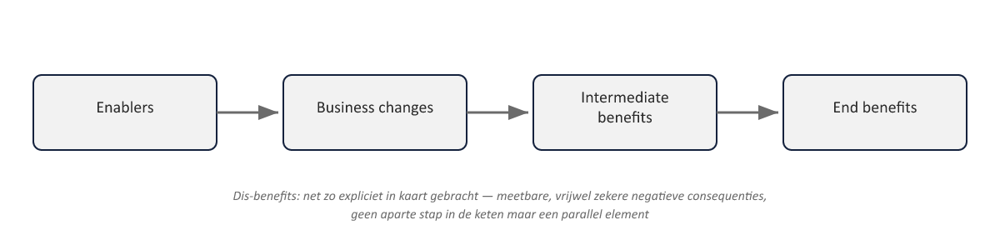
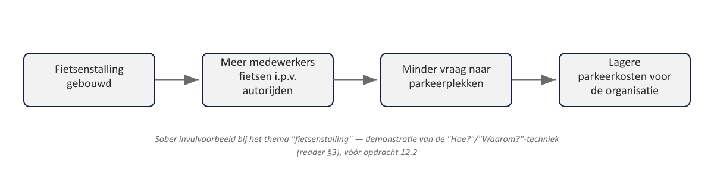

Sheet 1Titel
Project- en Programmamanagement
Niveau 2 · Deel 12: Benefits management I
Sheet 2Het zwaartepunt van niveau 2
Benefit Realisation Management stuurt de andere themes aan
Design, Justification en Structure bestaan om baten mogelijk te maken
Sheet 3Van keten naar netwerk
PRINCE2: output → capability → outcome → benefit (lineair)
MSP: een netwerk van enablers, business changes, intermediate en end benefits
Sheet 4De vijf elementen

Enablers · Business changes · Intermediate benefits · End benefits · Dis-benefits
Sheet 5De benefits map: twee vragen
“Hoe?” → naar links, richting enablers
“Waarom? / So what?” → naar rechts, richting hogere baten
Sheet 6Groepswerk, geen individuele tekenoefening
Verschillende perspectieven nodig
Voorkomt weerstand later in het programma
De kaart is een levend document
Sheet 7Voorbeeld: fietsenstalling

Sheet 8Van kaart naar profiel
Benefits map = het netwerk als geheel
Benefit profile = één baat, in detail
Sheet 9Wat een benefit profile bevat
- Beschrijving
- Operationele eigenaar
- Meetmethode + nulmeting
- Afhankelijkheden
- (bij dis-benefits: wie geraakt wordt, hoe ernstig)
Sheet 10Benefits management strategy
Het overkoepelende document
Ontwikkeld door de BCM namens de SRO
Sheet 11Benefits realisation plan
Volgt realisatie over tijd
Gekoppeld aan tranches (deel 15)
Ook baten ná het programma blijven gepland
Sheet 12Prioriteren: de benefits mapping grid
| Makkelijk te implementeren | Moeilijk te implementeren | |
|---|---|---|
| Hoge impact | Prioriteren — belangrijkste stuwende baten | Zorgvuldig afwegen tegen kosten en risico |
| Lage impact | Quick win — vroeg vertrouwen en momentum opbouwen | Heroverwegen of dit de moeite waard is |
Hoge impact/makkelijk: prioriteren
Hoge impact/moeilijk: zorgvuldig afwegen
Lage impact/makkelijk: quick win
Lage impact/moeilijk: heroverwegen
Sheet 13De Business Change Manager
Voorzit batenreviews
Stemt af met de sponsoring group over validatie
Verantwoordelijk voor de vertaalslag naar business changes
Sheet 14Toegepast: Programma Mutatieplatform
| Element | Inhoud |
|---|---|
| Enablers | Werkgeversportaal (WGP 2.0); geautomatiseerde interne mutatieverwerking; nieuwe kernsysteemkoppeling; herziene validatieregels; trainings- en veranderprogramma |
| Business changes | Werkgevers dienen mutaties zelf digitaal in; Klantcontact behandelt uitzonderingen in plaats van elke mutatie handmatig; foutieve mutaties worden bij invoer al gesignaleerd |
| Intermediate benefit | Minder handmatige nabewerking per mutatie |
| End benefit | 50% kortere doorlooptijd van werkgeversmutaties |
| Dis-benefit | Tijdelijke stijging van vragen bij de IT-helpdesk in de eerste maanden na livegang |
Sheet 15Vooruitblik
Tweede dagdeel: businesscase op programmaniveau (deel 13)
Later: deel 21, batenrealisatie overgedragen aan de staande organisatie